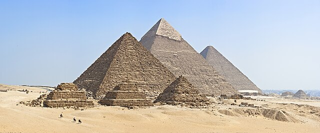
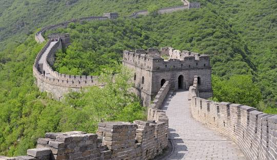
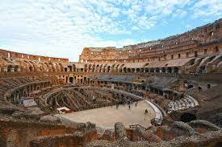

Famous Monuments
1.Pyramids of the Giza Necropolis

The Giza pyramid complex (also called the Giza necropolis) in Egypt is home to the Great Pyramid, the Pyramid of Khafre, and the Pyramid of Menkaure, along with their associated pyramid complexes and the Great Sphinx.
The earliest settlement of the Giza plateau predates the pyramid complexes. Four jars from the Maadi culture were found at the foot of the Great Pyramid, likely from a disturbed earlier settlement.[3] Further Maadi settlement near the site was uncovered during work on the Greater Cairo Wastewater Project.[4] Recent reassessment of the radiocarbon dating puts the Maadi culture's eponymous settlement to c. 3800 – c. 3400 BC, which is also the likely maximum possible range for the Giza remains.[5]
The Giza pyramid complex consists of the Great Pyramid (also known as the Pyramid of Cheops or Khufu and constructed c. 2580 – c. 2560 BC), the slightly smaller Pyramid of Khafre (or Chephren) a few hundred metres to the south-west, and the relatively modest-sized Pyramid of Menkaure (or Mykerinos) a few hundred metres farther south-west. The Great Sphinx lies on the east side of the complex. Consensus among Egyptologists is that the head of the Great Sphinx is that of Khafre. Along with these major monuments are a number of smaller satellite edifices, known as "queens" pyramids, causeways, and temples.[6] Besides the archaeological structures, the ancient landscape has also been investigated.[7]
2.The Great Wall of China

About
The Great Wall of China, an extraordinary feat of engineering, stretches over 21,000 kilometers (13,000 miles), making it one of the most iconic landmarks in the world. Built across rugged mountains, vast plains, and expansive deserts, this monumental structure stands as a testament to China's rich history and cultural resilience.
Historical Significance
The origins of the Great Wall date back to the 7th century BCE during the Warring States period, when independent kingdoms constructed walls to protect their territories. The most extensive and famous portions of the wall were built during the Ming Dynasty (1368–1644). The Ming rulers reinforced the wall to protect China from invasions by nomadic tribes, particularly the Mongols.
3.Machu Picchu: The Lost City of the Incas
.jpg)
About
Machu Picchu, nestled high in the Andes Mountains of Peru, is a UNESCO World Heritage Site and one of the New Seven Wonders of the World. Often referred to as the "Lost City of the Incas," this breathtaking archaeological site offers a glimpse into the advanced engineering and rich culture of the Inca civilization.
Historical Background
Built in the 15th century during the reign of the Inca emperor Pachacuti, Machu Picchu is believed to have served as a royal estate or religious site. It remained unknown to the outside world until its rediscovery in 1911 by American historian Hiram Bingham.
The Incas abandoned Machu Picchu during the Spanish conquest, leaving it largely untouched by colonial influences. Its remote location helped preserve its structures and mysteries for centuries.
3.The Colosseum: A Monument of Roman Glory

About
The Colosseum, also known as the Flavian Amphitheater, is one of the most iconic symbols of Ancient Rome. Located in the heart of modern-day Rome, Italy, this architectural marvel stands as a testament to Roman engineering, culture, and entertainment.
Historical Background
Commissioned by Emperor Vespasian of the Flavian dynasty in 72 CE and completed by his son Titus in 80 CE, the Colosseum was designed as a grand arena for public spectacles. It hosted gladiatorial games, animal hunts, mock naval battles, and dramatic performances, serving as a focal point for Roman public life.
4.The Colosseum: A Monument of Roman Glory
.jpg)
About
The Colosseum, also known as the Flavian Amphitheater, is one of the most iconic symbols of Ancient Rome. Located in the heart of modern-day Rome, Italy, this architectural marvel stands as a testament to Roman engineering, culture, and entertainment.
Historical Background
Commissioned by Emperor Vespasian of the Flavian dynasty in 72 CE and completed by his son Titus in 80 CE, the Colosseum was designed as a grand arena for public spectacles. It hosted gladiatorial games, animal hunts, mock naval battles, and dramatic performances, serving as a focal point for Roman public life.